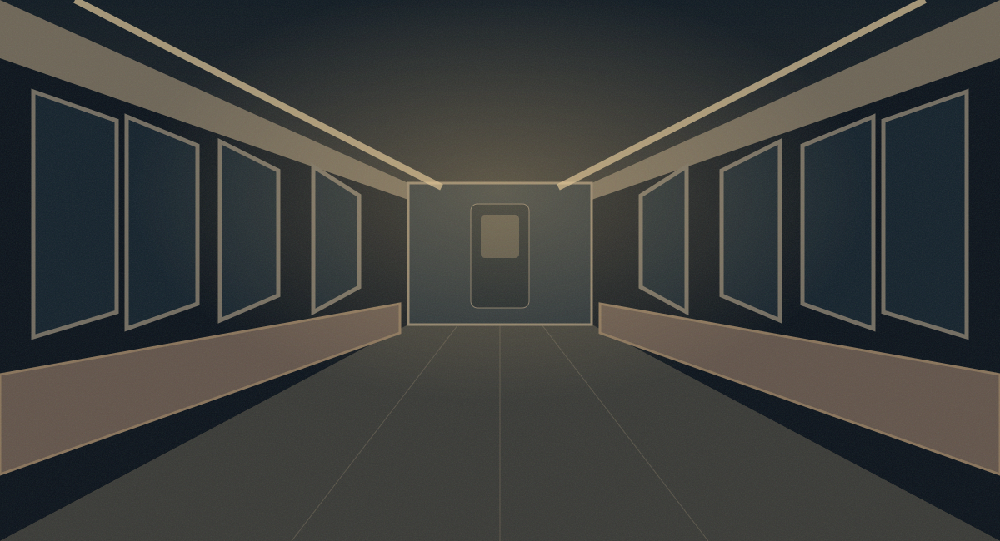

Independent literary journalNew York · No. 01

A Little More Light / Chapter 01 / Summer 2004
Finding the Star Within You
A midnight train. A stranger. A question that would stay with me for more than twenty years.
Read the story →We rarely know how far our light travels.
From Chapter One